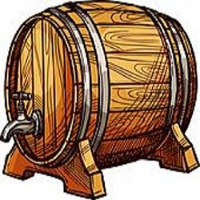
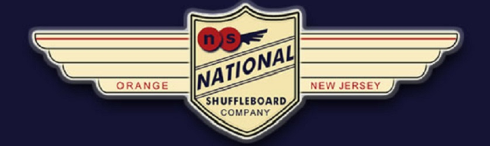

Basic Tap & Draw Gameplay
This is an excellent game for a beginner who is opposing a
skilled player. The object of the game is to shuffle your
pucks up to the farthest scoring position on the board,
without knocking ANY pucks off the board. In this game,
it is an advantage to shuffle the first puck. A game is
NOT complete until the player or team, which has been
shooting last, has taken its last turn at the board, even
though the player or team shooting first has already scored
51 points or more. If both teams go over 51 points, the one
with the final highest score is the winner.
How To Throw Shuffleboard Pucks In Tap & Draw
Pucks are shuffled alternately, until all eight have been shuffled,
completing one round of play. You may try to tap your own puck,
with the purpose of sending it farther up the board, but if you
knock your own puck off the board, it stays off and out of play.
If you knock your opponent’s puck off the board, your puck will
be removed from play, and your opponent’s puck will be replaced
on the board in its original position. If you knock your opponent’s
puck off the board, and at the same time advance one or more of your
own pucks to higher scoring areas, your pucks must be returned to
their original positions, your opponent’s pucks replaced in their
original position, and your shooting puck must be removed from the
board. If you tap any of your opponent’s pucks so that they advance,
they remain in the better scoring position.
How To Score Shuffleboard in Tap & Draw
If playing like traditional Knock Off, scoring is to 15 points and
score counting is identical to Knock Off, in which a puck scores
one-point if it is located between the designated foul line and
the two-line, two or three points if the puck is completely across
the two or three lines, and four if you have a mythical hanger.
If playing like Horse Collar, scoring is to 51 points and scoring
rules are the same as those in Horse Collar. This means no scoring
at all unless there is at least one puck completely in the three-point
zone, 13-point zone, or 26-point zone. Once the first points have
been scored, traditional shuffleboard rules apply, except for the
larger points awarded to all pucks overhanging the board at the far
end, for 13 points, and all pucks overhanging the left- and/or
right-hand corner of the board, for 26 points.